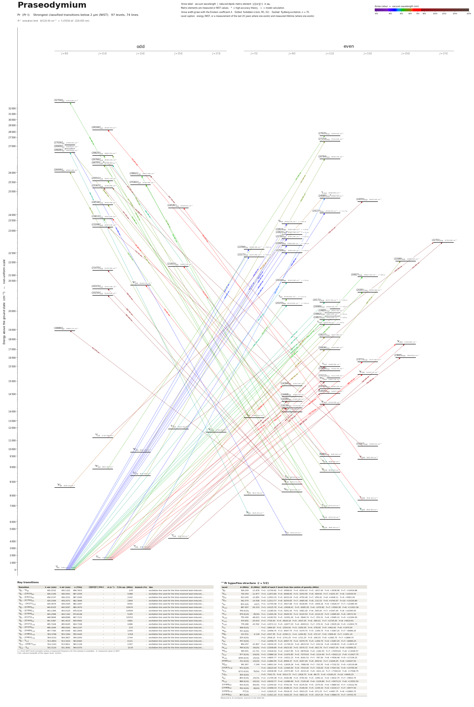

Praseodymium energy level diagram
Energy levels and transitions of neutral praseodymium (Pr I): the 74 strongest classified lines below 2 µm from the NIST Atomic Spectra Database and the 97 levels they connect, each line with its vacuum wavelength, frequency and, for 0 of them, the reduced dipole matrix element derived from the NIST transition rate. Measured lifetimes, transition rates, hyperfine constants and isotope shifts from the literature are included, each with its citation.
Hover a line or a level to isolate it, click to keep it selected. Scroll to zoom, drag to move.

Download: diagram (PDF) diagram (SVG) transitions (CSV) levels (CSV) source code

Key transitions of praseodymium
| Transition | λ vac (nm) | λ air (nm) | ν (THz) | |⟨J‖er‖J′⟩| (ea₀) | A (s⁻¹) | Γ/2π up. (MHz) | branch (%) | Use |
|---|---|---|---|---|---|---|---|---|
| 4I°9/2 – 4G9/2 | 430.2532 | 430.1322 | 696.7815 | – | – | 1.09 | – | excitation line used for the time-resolved laser-induced-… |
| 4I°9/2 – (22924)9/2 | 436.2166 | 436.0941 | 687.2559 | – | – | 5.488 | – | excitation line used for the time-resolved laser-induced-… |
| 4I°9/2 – (22921)9/2 | 436.2747 | 436.1521 | 687.1645 | – | – | 2.242 | – | excitation line used for the time-resolved laser-induced-… |
| 4I°9/2 – (22762)9/2 | 439.3306 | 439.2072 | 682.3846 | – | – | 2.894 | – | excitation line used for the time-resolved laser-induced-… |
| 4I°11/2 – (24137)11/2 | 439.3679 | 439.2445 | 682.3267 | – | – | 8.992 | – | excitation line used for the time-resolved laser-induced-… |
| 4I°9/2 – (22695)9/2 | 440.6335 | 440.5097 | 680.3670 | – | – | 0.9474 | – | excitation line used for the time-resolved laser-induced-… |
| 4I°9/2 – (22566)7/2 | 443.1369 | 443.0125 | 676.5234 | – | – | 0.4509 | – | excitation line used for the time-resolved laser-induced-… |
| 4I°9/2 – (22509)9/2 | 444.2588 | 444.1342 | 674.8148 | – | – | 5.305 | – | excitation line used for the time-resolved laser-induced-… |
| 4I°9/2 – (22272)7/2 | 448.9846 | 448.8586 | 667.7121 | – | – | 0.5253 | – | excitation line used for the time-resolved laser-induced-… |
| 4I°9/2 – (20344)9/2 | 491.5387 | 491.4015 | 609.9062 | – | – | 4.681 | – | excitation line used for the time-resolved laser-induced-… |
| 4I°9/2 – (20172)11/2 | 495.7428 | 495.6045 | 604.7338 | – | – | 0.686 | – | excitation line used for the time-resolved laser-induced-… |
| 4I°9/2 – (20155)9/2 | 496.1646 | 496.0262 | 604.2197 | – | – | 1.53 | – | excitation line used for the time-resolved laser-induced-… |
| 4I°9/2 – (20089)11/2 | 497.7784 | 497.6396 | 602.2609 | – | – | 2.094 | – | excitation line used for the time-resolved laser-induced-… |
| 4I°9/2 – (19862)11/2 | 503.4768 | 503.3364 | 595.4445 | – | – | 1.918 | – | excitation line used for the time-resolved laser-induced-… |
| 4I°9/2 – (19821)11/2 | 504.5233 | 504.3827 | 594.2093 | – | – | 2.744 | – | excitation line used for the time-resolved laser-induced-… |
| 4I°9/2 – 4I11/2 | 513.4854 | 513.3424 | 583.8383 | – | – | 6.121 | – | excitation line used for the time-resolved laser-induced-… |
| 4I°11/2 – (20827)13/2 | 514.1243 | 513.9811 | 583.1128 | – | – | 2.307 | – | excitation line used for the time-resolved laser-induced-… |
| 4I°11/2 – 4I9/2 | 531.5120 | 531.3642 | 564.0370 | – | – | 13.05 | – | excitation line used for the time-resolved laser-induced-… |
λ, ν from NIST level energies unless a measured frequency for this isotope is available. A: measured value or NIST. Γ/2π: natural linewidth of the upper level, 1/(2πτ).
141Pr hyperfine structure (I = 5/2)
| Level | A (MHz) | B (MHz) | Shift of each F level from the centre of gravity (MHz) |
|---|---|---|---|
| 4I°9/2 | 926.209 | -11.878 | F=2: -12740.82 F=3: -9958.63 F=4: -6250.43 F=5: -1617.40 F=6: +3938.96 F=7: +10416.88 |
| 4I°11/2 | 730.393 | -11.877 | F=3: -11873.80 F=4: -8948.60 F=5: -5293.56 F=6: -909.64 F=7: +4201.97 F=8: +10039.93 |
| 4I°13/2 | 613.240 | -12.850 | F=4: -11503.19 F=5: -8433.04 F=6: -4750.48 F=7: -456.42 F=8: +4448.11 F=9: +9961.94 |
| 4I°15/2 | 541.575 | -14.558 | F=5: -11513.77 F=6: -8259.83 F=7: -4465.46 F=8: -131.53 F=9: +4740.97 F=10: +10150.89 |
| 4I9/2 | 923.2(4) | -22(7) | F=2: -12704.08 F=3: -9927.88 F=4: -6228.85 F=5: -1609.18 F=6: +3928.37 F=7: +10380.50 |
| 4K11/2 | 867.997 | -50.319 | F=3: -14125.76 F=4: -10638.41 F=5: -6285.39 F=6: -1070.82 F=7: +5000.36 F=8: +11922.38 |
| 4I11/2 | 756.0(10) | – | F=3: -12285.00 F=4: -9261.00 F=5: -5481.00 F=6: -945.00 F=7: +4347.00 F=8: +10395.00 |
| 4H7/2 | 979.0(10) | 25(30) | F=1: -11000.36 F=2: -9049.50 F=3: -6120.54 F=4: -2210.25 F=5: +2685.64 F=6: +8572.50 |
| 4K13/2 | 755.456 | -48.633 | F=4: -14183.50 F=5: -10391.26 F=6: -5846.74 F=7: -553.31 F=8: +5485.10 F=9: +12264.00 |
| 6L11/2 | 474.692 | -29.633 | F=3: -7726.00 F=4: -5818.18 F=5: -3437.05 F=6: -585.01 F=7: +2735.00 F=8: +6519.61 |
| 6L13/2 | 776.286 | -43.592 | F=4: -14572.13 F=5: -10677.29 F=6: -6009.01 F=7: -570.31 F=8: +5635.28 F=9: +12603.75 |
| 6I7/2 | 168.0(10) | – | F=1: -1890.00 F=2: -1554.00 F=3: -1050.00 F=4: -378.00 F=5: +462.00 F=6: +1470.00 |
| 4H9/2 | 797.0(20) | – | F=2: -10958.75 F=3: -8567.75 F=4: -5379.75 F=5: -1394.75 F=6: +3387.25 F=7: +8966.25 |
| 6K°9/2 | 213.531 | -4.136 | F=2: -2937.95 F=3: -2296.11 F=4: -1440.82 F=5: -372.47 F=6: +908.40 F=7: +2401.19 |
| 6K9/2 | 255.0(20) | – | F=2: -3506.25 F=3: -2741.25 F=4: -1721.25 F=5: -446.25 F=6: +1083.75 F=7: +2868.75 |
| 6I9/2 | 797.0(20) | – | F=2: -10958.75 F=3: -8567.75 F=4: -5379.75 F=5: -1394.75 F=6: +3387.25 F=7: +8966.25 |
| 6L°13/2 | 854.297 | -31.807 | F=4: -16030.30 F=5: -11749.03 F=6: -6615.54 F=7: -632.04 F=8: +6198.91 F=9: +13874.37 |
| 6K11/2 | 769.0(10) | -30(20) | F=3: -12508.66 F=4: -9423.50 F=5: -5570.72 F=6: -952.79 F=7: +4427.34 F=8: +10566.25 |
| 6K°11/2 | 949.091 | -13.721 | F=3: -15428.40 F=4: -11627.85 F=5: -6878.84 F=6: -1182.50 F=7: +5459.83 F=8: +13046.57 |
| 6I11/2 | 977.0(10) | -24(20) | F=3: -15886.18 F=4: -11970.85 F=5: -7079.63 F=6: -1214.49 F=7: +5622.22 F=8: +13427.75 |
| 6K13/2 | 1056.0(10) | -15(10) | F=4: -19805.77 F=5: -14521.15 F=6: -8181.52 F=7: -787.90 F=8: +7658.48 F=9: +17156.25 |
| (9484)11/2 | 731.0(10) | -15(10) | F=3: -11884.95 F=4: -8956.37 F=5: -5297.49 F=6: -909.52 F=7: +4206.05 F=8: +10047.50 |
| 6K°13/2 | 991.907 | -7.246 | F=4: -18601.04 F=5: -13639.28 F=6: -7686.08 F=7: -741.95 F=8: +7192.52 F=9: +16116.68 |
| (10267)13/2 | 972.0(20) | – | F=4: -18225.00 F=5: -13365.00 F=6: -7533.00 F=7: -729.00 F=8: +7047.00 F=9: +15795.00 |
| 6I°11/2 | 1272.0(10) | 75(50) | F=3: -20638.98 F=4: -15573.89 F=5: -9233.32 F=6: -1611.14 F=7: +7300.02 F=8: +17508.75 |
| 4L°15/2 | 355.0(20) | – | F=5: -7543.75 F=6: -5413.75 F=7: -2928.75 F=8: -88.75 F=9: +3106.25 F=10: +6656.25 |
| 6I9/2 | 854.0(10) | -15(15) | F=2: -11749.38 F=3: -9182.88 F=4: -5762.62 F=5: -1490.12 F=6: +3632.75 F=7: +9603.75 |
| 6K11/2 | 986.0(10) | -20(10) | F=3: -16030.77 F=4: -12080.66 F=5: -7145.48 F=6: -1226.86 F=7: +5673.23 F=8: +13552.50 |
| (14186)9/2 | 910.0(10) | -60(30) | F=2: -12540.00 F=3: -9792.00 F=4: -6135.00 F=5: -1575.00 F=6: +3880.50 F=7: +10222.50 |
| (14468)9/2 | 762.0(20) | 20(20) | F=2: -10468.33 F=3: -8188.33 F=4: -5146.00 F=5: -1339.33 F=6: +3234.17 F=7: +8577.50 |
| (14505)11/2 | 777(3) | – | F=3: -12626.25 F=4: -9518.25 F=5: -5633.25 F=6: -971.25 F=7: +4467.75 F=8: +10683.75 |
| (14764)9/2 | 867.0(20) | – | F=2: -11921.25 F=3: -9320.25 F=4: -5852.25 F=5: -1517.25 F=6: +3684.75 F=7: +9753.75 |
Measured A, B constants; sources in the data file.
Listed Pr transitions below 2 µm
| Lower level | Upper level | λ vacuum (nm) | λ air (nm) | ν (THz) | Type | |⟨J‖er‖J′⟩| (ea₀) | A (s⁻¹) | Branching (%) | Source of matrix element / A |
|---|---|---|---|---|---|---|---|---|---|
| 4I°9/2 | 4G9/2 | 430.2532 | 430.1322 | 696.7815 | E1 | – | – | – | – |
| 4I°9/2 | (22924)9/2 | 436.2166 | 436.0941 | 687.2559 | E1 | – | – | – | – |
| 4I°9/2 | (22921)9/2 | 436.2747 | 436.1521 | 687.1645 | E1 | – | – | – | – |
| 4I°9/2 | (22762)9/2 | 439.3306 | 439.2072 | 682.3846 | E1 | – | – | – | – |
| 4I°11/2 | (24137)11/2 | 439.3679 | 439.2445 | 682.3267 | E1 | – | – | – | – |
| 4I°9/2 | (22695)9/2 | 440.6335 | 440.5097 | 680.3670 | E1 | – | – | – | – |
| 4I9/2 | (27026)°9/2 | 442.5899 | 442.4656 | 677.3595 | E1 | – | – | – | – |
| 4I°9/2 | (22566)7/2 | 443.1369 | 443.0125 | 676.5234 | E1 | – | – | – | – |
| 4I°9/2 | (22509)9/2 | 444.2588 | 444.1342 | 674.8148 | E1 | – | – | – | – |
| 4I°9/2 | (22272)7/2 | 448.9846 | 448.8586 | 667.7121 | E1 | – | – | – | – |
| 4I°13/2 | (24585)11/2 | 460.0237 | 459.8949 | 651.6891 | E1 | – | – | – | – |
| 4I°9/2 | (20344)9/2 | 491.5387 | 491.4015 | 609.9062 | E1 | – | – | – | – |
| 4H7/2 | (26829)°9/2 | 492.7732 | 492.6357 | 608.3781 | E1 | – | – | – | – |
| 4I°9/2 | (20172)11/2 | 495.7428 | 495.6045 | 604.7338 | E1 | – | – | – | – |
| 4I°9/2 | (20155)9/2 | 496.1646 | 496.0262 | 604.2197 | E1 | – | – | – | – |
| 4K13/2 | (26757)°11/2 | 496.1856 | 496.0471 | 604.1942 | E1 | – | – | – | – |
| 4I°9/2 | (20089)11/2 | 497.7784 | 497.6396 | 602.2609 | E1 | – | – | – | – |
| 4I°9/2 | (19862)11/2 | 503.4768 | 503.3364 | 595.4445 | E1 | – | – | – | – |
| 4I°9/2 | (19821)11/2 | 504.5233 | 504.3827 | 594.2093 | E1 | – | – | – | – |
| 4I11/2 | (25902)°13/2 | 510.4867 | 510.3444 | 587.2679 | E1 | – | – | – | – |
| 4I°9/2 | 4I11/2 | 513.4854 | 513.3424 | 583.8383 | E1 | – | – | – | – |
| 4I°11/2 | (20827)13/2 | 514.1243 | 513.9811 | 583.1128 | E1 | – | – | – | – |
| 6I7/2 | (32704)°9/2 | 519.4800 | 519.3353 | 577.1011 | E1 | – | – | – | – |
| 4I°11/2 | (20291)13/2 | 528.7095 | 528.5624 | 567.0269 | E1 | – | – | – | – |
| 6L11/2 | (25551)°11/2 | 530.8687 | 530.7210 | 564.7206 | E1 | – | – | – | – |
| 4I°11/2 | 4I9/2 | 531.5120 | 531.3642 | 564.0370 | E1 | – | – | – | – |
| 6K°11/2 | (27635)11/2 | 531.9404 | 531.7924 | 563.5828 | E1 | – | – | – | – |
| 4H9/2 | (26825)°11/2 | 532.0420 | 531.8940 | 563.4752 | E1 | – | – | – | – |
| 4K11/2 | (23612)°11/2 | 533.4725 | 533.3241 | 561.9643 | E1 | – | – | – | – |
| 6L11/2 | (25382)°13/2 | 535.6683 | 535.5193 | 559.6607 | E1 | – | – | – | – |
| 6I9/2 | (26825)°11/2 | 550.0272 | 549.8744 | 545.0503 | E1 | – | – | – | – |
| 6L°13/2 | (26784)11/2 | 553.9911 | 553.8373 | 541.1503 | E1 | – | – | – | – |
| 6I7/2 | (26006)°9/2 | 555.7705 | 555.6161 | 539.4178 | E1 | – | – | – | – |
| 6K11/2 | (26757)°11/2 | 557.7777 | 557.6228 | 537.4766 | E1 | – | – | – | – |
| 6L11/2 | (24534)°11/2 | 561.1619 | 561.0061 | 534.2353 | E1 | – | – | – | – |
| 4I°15/2 | (22089)15/2 | 564.7254 | 564.5687 | 530.8641 | E1 | – | – | – | – |
| 6I11/2 | (26909)°9/2 | 566.8966 | 566.7394 | 528.8309 | E1 | – | – | – | – |
| 6K°13/2 | (27154)11/2 | 572.4197 | 572.2609 | 523.7284 | E1 | – | – | – | – |
| 4I°13/2 | (19920)11/2 | 585.6992 | 585.5369 | 511.8539 | E1 | – | – | – | – |
| 4I°9/2 | (16936)11/2 | 590.4624 | 590.2988 | 507.7249 | E1 | – | – | – | – |
| 4I°11/2 | (18237)11/2 | 593.0955 | 592.9312 | 505.4708 | E1 | – | – | – | – |
| 6K°9/2 | 6L11/2 | 611.9719 | 611.8025 | 489.8795 | E1 | – | – | – | – |
| 6K13/2 | (24529)°15/2 | 663.8132 | 663.6299 | 451.6218 | E1 | – | – | – | – |
| 4I°13/2 | 4K15/2 | 685.7191 | 685.5300 | 437.1942 | E1 | – | – | – | – |
| 4I°11/2 | (15773)13/2 | 694.6384 | 694.4468 | 431.5806 | E1 | – | – | – | – |
| 4I°9/2 | (14139)9/2 | 707.2471 | 707.0521 | 423.8865 | E1 | – | – | – | – |
| (9484)11/2 | (23612)°11/2 | 707.8068 | 707.6116 | 423.5513 | E1 | – | – | – | – |
| 6L13/2 | (21655)°15/2 | 713.0130 | 712.8165 | 420.4586 | E1 | – | – | – | – |
| 4I°11/2 | 6K13/2 | 725.7152 | 725.5153 | 413.0993 | E1 (intercombination) | – | – | – | – |
| 4I°11/2 | (15112)11/2 | 728.0723 | 727.8717 | 411.7619 | E1 | – | – | – | – |
| (14505)11/2 | (28169)°11/2 | 731.8710 | 731.6694 | 409.6247 | E1 | – | – | – | – |
| 6L11/2 | 6K°13/2 | 733.9315 | 733.7293 | 408.4747 | E1 | – | – | – | – |
| 4I°11/2 | (14764)9/2 | 746.9532 | 746.7475 | 401.3537 | E1 | – | – | – | – |
| 6I°11/2 | (24555)13/2 | 755.7105 | 755.5025 | 396.7028 | E1 | – | – | – | – |
| 6K9/2 | (21470)°11/2 | 760.4430 | 760.2337 | 394.2340 | E1 | – | – | – | – |
| 4I°13/2 | (15995)15/2 | 760.5685 | 760.3591 | 394.1689 | E1 | – | – | – | – |
| 4I°11/2 | (14468)9/2 | 763.8410 | 763.6308 | 392.4802 | E1 | – | – | – | – |
| 4I°15/2 | 4K15/2 | 766.3493 | 766.1384 | 391.1956 | E1 | – | – | – | – |
| (10267)13/2 | (23208)°11/2 | 772.7366 | 772.5240 | 387.9620 | E1 | – | – | – | – |
| 4I°11/2 | (14186)9/2 | 780.6529 | 780.4382 | 384.0278 | E1 | – | – | – | – |
| 4I°13/2 | 2I11/2 | 792.2154 | 791.9975 | 378.4229 | E1 (intercombination) | – | – | – | – |
| 4I°13/2 | 6I11/2 | 824.0769 | 823.8504 | 363.7919 | E1 (intercombination) | – | – | – | – |
| (14764)9/2 | (26766)°11/2 | 833.2028 | 832.9739 | 359.8073 | E1 | – | – | – | – |
| 4I°13/2 | (14760)11/2 | 839.3790 | 839.1483 | 357.1598 | E1 | – | – | – | – |
| 6I9/2 | (20315)°11/2 | 856.7916 | 856.5562 | 349.9013 | E1 | – | – | – | – |
| 4I°13/2 | (14505)11/2 | 857.7536 | 857.5180 | 349.5088 | E1 | – | – | – | – |
| 6I9/2 | (20250)°11/2 | 861.6448 | 861.4082 | 347.9304 | E1 | – | – | – | – |
| 6I9/2 | (25367)°11/2 | 877.7928 | 877.5518 | 341.5299 | E1 | – | – | – | – |
| 4I°13/2 | 6K11/2 | 882.4840 | 882.2417 | 339.7143 | E1 (intercombination) | – | – | – | – |
| 6K°17/2 | (22701)17/2 | 914.3610 | 914.1101 | 327.8710 | E1 | – | – | – | – |
| 4L°15/2 | (22701)17/2 | 918.5950 | 918.3430 | 326.3598 | E1 | – | – | – | – |
| 4H9/2 | (18886)°9/2 | 921.0758 | 920.8231 | 325.4808 | E1 | – | – | – | – |
| (15238)11/2 | (25902)°13/2 | 937.7151 | 937.4579 | 319.7053 | E1 | – | – | – | – |
| (14760)11/2 | (25367)°11/2 | 942.8056 | 942.5470 | 317.9791 | E1 | – | – | – | – |
Reduced dipole matrix elements follow the convention A = ω³|d|²/(3πε₀ħc³(2J′+1)), with J′ the upper level. Tags show where a number comes from: measured, NIST compilation, high-accuracy theory, or a model calculation.
Pr energy levels
Pr⁺ ionisation limit 44120.00 cm⁻¹ = 5.47018 eV (226.655 nm)
Sources
- Biémont, Quinet, Svanberg, Xu, J. Phys. B 37, 1381 (2004), Table 1
- Childs & Goodman, Phys. Rev. A 24, 1342 (1981), atomic-beam laser-rf double resonance, as…
- Guthöhrlein (1996-2005), unpublished diploma theses, Helmut-Schmidt-Universität Hamburg, …
- Kuwamoto et al. (1996), atomic-beam laser spectroscopy, as tabulated in Khan, Siddiqui, I…
- NIST ASD level energies
141Pr is the only stable isotope (I = 5/2); there are no isotope shifts to report. Hyperfine constants: second-hand from the reference columns of Khan et al., Int. J. Chem. 9(1), 7 (2017) (open-access PDF parsed as text), which quote Childs & Goodman 1981 (CG81, laser-rf double resonance, kHz-level precision, printed without uncertainty), Kuwamoto et al. 1996 (K96), Krzykowski et al. 1997 (KF97) and unpublished Hamburg theses (G96). Where the source assumed B = 0 no B is given. Classified lines: (a) Gamper et al., J. Phys. B 44, 045003 (2011), supplementary Table 1 (PDF downloaded through the publisher data page): air centre-of-gravity wavelengths in angstrom, signal-to-noise ratio, J and energy of the even and odd level. Only lines whose two levels match NIST levels (same J, energy within 0.15 cm-1, expected parity) were entered. The supplementary table carries no caption stating air/vacuum; the wavelengths reproduce the level differences only as air wavelengths (checked on 4432.240 - 29526.571: vacuum 3984.96 A, listed 3983.837 A). (b) the excitation schemes of Biémont et al. 2004, Table 1 (vacuum wavelengths computed from NIST energies). "relative_intensity" is a non-schema field holding the signal-to-noise ratio. Laser stabilisation (not entered as transitions because the levels are not in NIST): Oppel, Guthöhrlein, Kaenders, von Zanthier, arXiv:0912.2234 lock a diode laser to the Pr I line 16502.616 (J=7/2, even) - 25442.742 (J=9/2, odd) cm-1 at 1118.5397(4) nm, and show
Atoms with measured data
- Lithium-632 levels, 85 lines
- Lithium-732 levels, 85 lines
- Beryllium-917 levels, 26 lines
- Sodium-2336 levels, 106 lines
- Magnesium-2418 levels, 61 lines
- Magnesium-2518 levels, 61 lines
- Potassium-3934 levels, 84 lines
- Potassium-4034 levels, 84 lines
- Potassium-4134 levels, 84 lines
- Calcium-4035 levels, 61 lines
- Calcium-4335 levels, 61 lines
- Chromium-5256 levels, 87 lines
- Chromium-5356 levels, 87 lines
- Rubidium-8536 levels, 94 lines
- Rubidium-8736 levels, 94 lines
- Strontium-8440 levels, 70 lines
- Strontium-8640 levels, 70 lines
- Strontium-8740 levels, 70 lines
- Strontium-8840 levels, 70 lines
- Cadmium-11115 levels, 21 lines
- Cadmium-11315 levels, 21 lines
- Cadmium-11415 levels, 21 lines
- Caesium-13331 levels, 79 lines
- Barium-13744 levels, 89 lines
- Barium-13844 levels, 89 lines
- Dysprosium-16139 levels, 55 lines
- Dysprosium-16239 levels, 55 lines
- Dysprosium-16339 levels, 55 lines
- Dysprosium-16439 levels, 55 lines
- Erbium-16673 levels, 90 lines
- Erbium-16773 levels, 90 lines
- Erbium-16873 levels, 90 lines
- Thulium-16972 levels, 73 lines
- Ytterbium-17118 levels, 26 lines
- Ytterbium-17318 levels, 26 lines
- Ytterbium-17418 levels, 26 lines
- Mercury-19927 levels, 47 lines
- Mercury-20127 levels, 47 lines
- Mercury-20227 levels, 47 lines